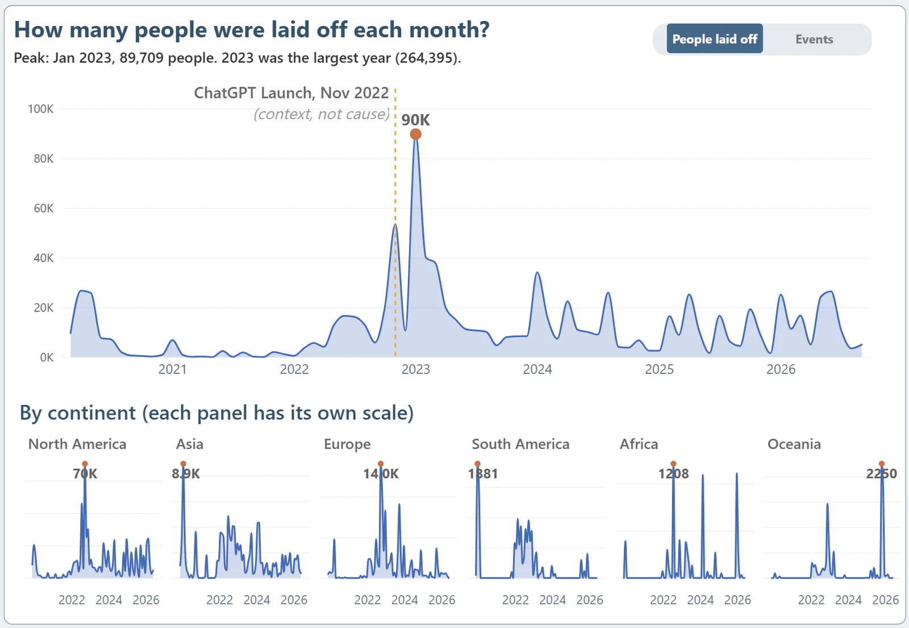

Chart 1 · Trend
How many people were laid off each month?
Monthly total for the whole tracker, switchable between people and events, repeated below as small multiples by continent. Each continent panel has its own scale.
The ChatGPT launch (November 2022) is marked as context, not cause: the 2022–2023 cuts are commonly attributed to post-pandemic overhiring and rising interest rates.
Try the switch above the chart; it behaves like the toggle in the Power BI report.